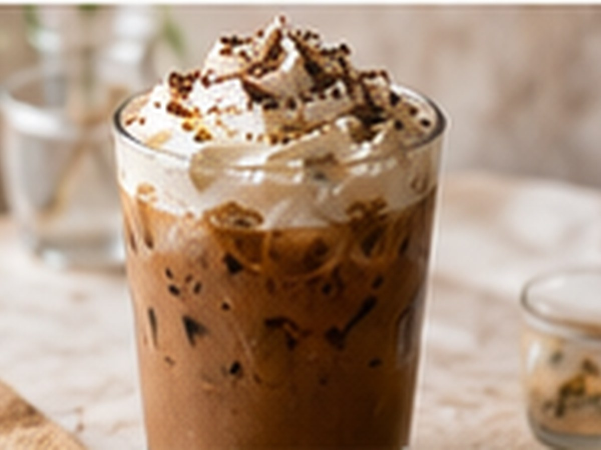

✨ KI-generiertes Bild Saisonale RezepteSaisonale Rezepte
Eiskaffee
Der deutsche Café-Klassiker.
⏱4 Min.
📶Einfach
☕1 Portion
🫘Zutaten
- Vanilleeis1 Kugel
- Kaffee, kalt150 ml
- Sahneoptional, 30 ml
📋Zubereitung
- 1Kalten Kaffee in ein Glas geben.
- 2Eine Kugel Vanilleeis hinzufügen.
- 3Nach Wunsch mit Sahne toppen.
💡
Kaffee für dieses Rezept entdeckenLeNoKo Shop
→
Kaffee-Tipp
Die Linzer Röstung mit Karamell und Schokolade ist unser Klassiker für Eiskaffee.